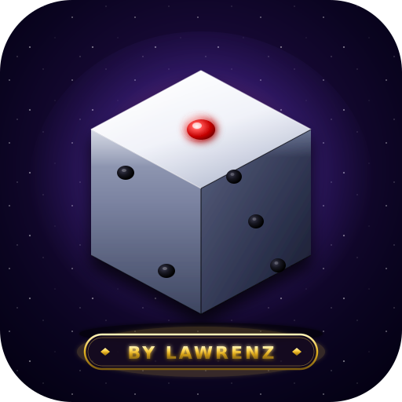
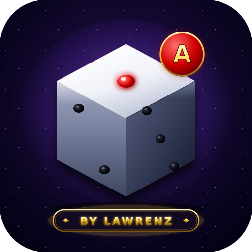

⚡ Ular Tangga By JM
Download APK Android — install langsung, tanpa Play Store

Ular Tangga (Game)
v1.0.3 · ~1.6 MB · Fullscreen + Voice/Cam
🎤 Mic📷 Cam🖥️ Fullscreen
⬇️ Download APK

UT Admin (Panel)
v1.0.3 · ~1.6 MB · Fullscreen + Voice/Cam
🎤 Mic📷 Cam🖥️ Fullscreen
⬇️ Download APK
⚠️ Sudah pernah install versi lama?
Hapus dulu app lama (long-press ikon → Uninstall) sebelum install yang baru. Beda signing key, jadi ga bisa di-update otomatis.
🛡️ Aman & terverifikasi
APK ini ditandatangani digital (v1+v2+v3 scheme), zip-aligned, HTTPS-only, debuggable=false. Kalau Play Protect tampilkan warning "app tidak diketahui" — itu normal untuk semua app sideload (di luar Play Store). Tap "Install Anyway" / "Install Tetap". Game ini bersih tanpa malware.
Cara install:
- Tap tombol Download APK di atas
- Kalau Chrome bilang "file ini mungkin berbahaya" — tap "Tetap Simpan" / "Keep"
- Buka file APK yang baru di-download
- Izinin "Install dari sumber tidak dikenal" kalau diminta
- Tap Install → Buka
- Pertama kali buka, izinin akses Kamera + Mikrofon (buat voice/video chat)
v1.0.3: tampilan fullscreen tanpa URL bar + dukungan kamera & mikrofon untuk fitur voice/video. Custom build oleh JM Story · BY LAWRENZ ✨